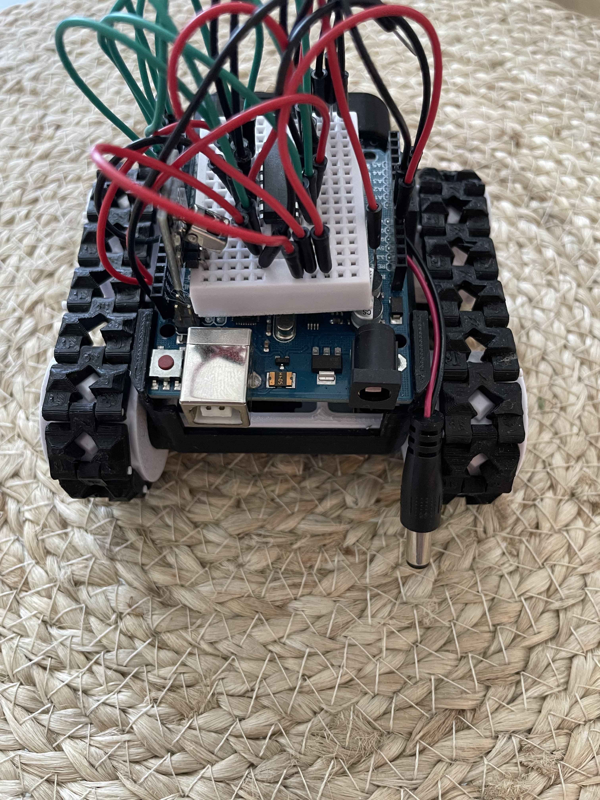
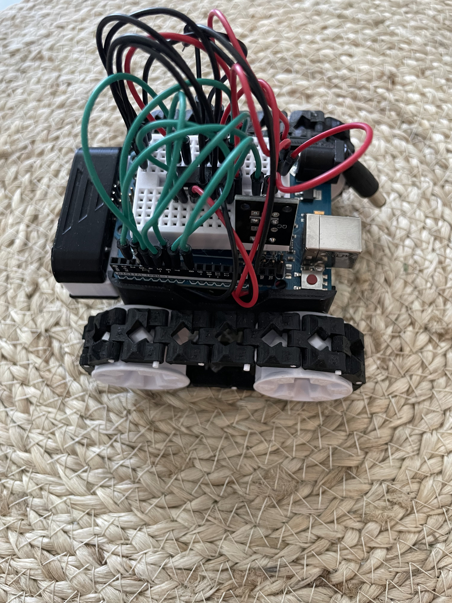
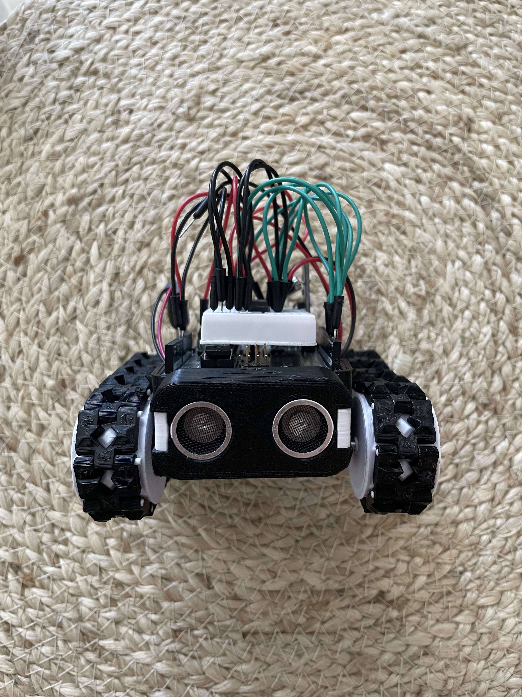
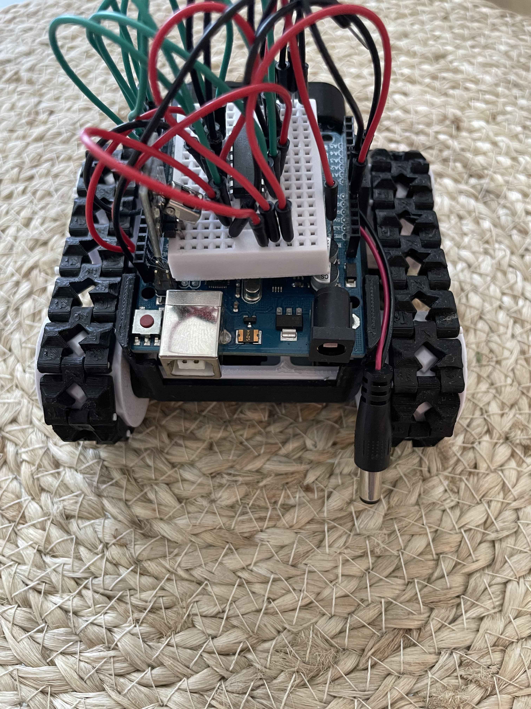
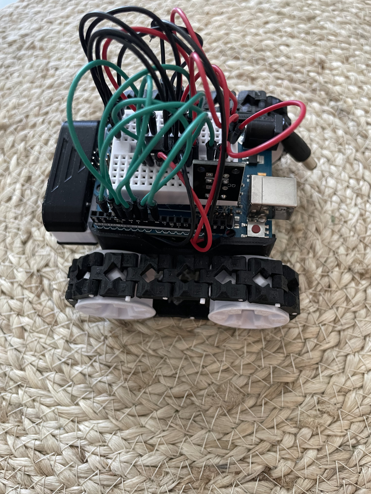
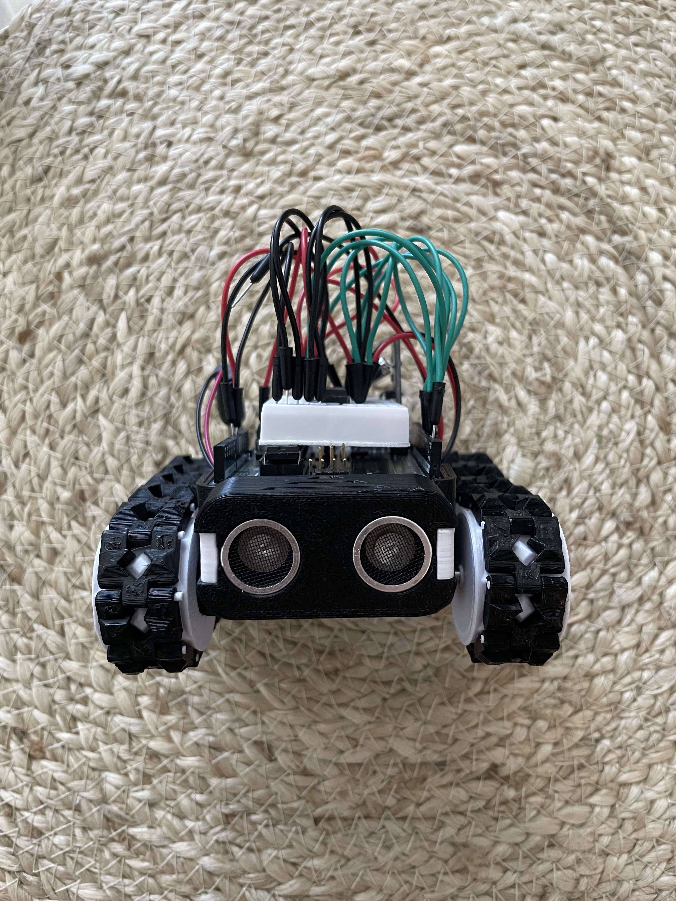

Netissä vastaan tullut projekti, joka yhdistää elektroniikkaa, 3D-tulostusta sekä koodia.
Noin 10 tuntia yhteensä suunnitteluun, tulostukseen, kytkentöihin ja ohjelmointiin.
#include "IRremote.hpp"
#define speed_left_motor 245
#define speed_right_motor 200
int IR_RECEIVE_PIN = 2; // Ir receiver
int motor1_forward = 3; // Moottori 1 (Vasen) eteenpäin L293D pin 2
int motor1_backward = 4; // Moottori 1 (Vasen) taaksepäin L293D pin 7
int motor1_enable = 5; // PWM motor control L293D pin 1
int motor2_enable = 6; // PWM motor control L293D pin 9
int motor2_backward = 7; // Moottori 2 (Oikea) eteenpäin L293D pin 10
int motor2_forward = 8; // Moottori 2 (Oikea) taaksepäin L293D pin 15
void setup() {
Serial.begin(9600); // Alustetaan sarjaportti
IrReceiver.begin(IR_RECEIVE_PIN, ENABLE_LED_FEEDBACK); //ir receiver setup
// Aseta moottorin ohjauspinneille OUTPUT-tila
pinMode(motor1_forward, OUTPUT);
pinMode(motor1_backward, OUTPUT);
pinMode(motor1_enable, OUTPUT);
pinMode(motor2_enable, OUTPUT);
pinMode(motor2_forward, OUTPUT);
pinMode(motor2_backward, OUTPUT);
Serial.println("IR Receiver is ready to receive signals...");
}
void loop() {
if (IrReceiver.decode()) {
IrReceiver.printIRResultShort(&Serial);
uint16_t command = IrReceiver.decodedIRData.command;
switch(command){
case 0x18:
moveForward();
break;
case 0x52:
moveBackward();
break;
case 0x8:
turnLeft();
break;
case 0x5A:
turnRight();
break;
case 0x1C:
stopMotors();
break;
default:
Serial.println("?");
}
IrReceiver.resume();
}
}
void moveForward() {
digitalWrite(motor1_forward, HIGH);
digitalWrite(motor1_backward, LOW);
digitalWrite(motor2_forward, HIGH);
digitalWrite(motor2_backward, LOW);
analogWrite(motor1_enable, speed_left_motor);
analogWrite(motor2_enable, speed_right_motor);
Serial.println("Moving forward");
}
// Funktio liikkumiseen taaksepäin
void moveBackward() {
digitalWrite(motor1_forward, LOW);
digitalWrite(motor1_backward, HIGH);
digitalWrite(motor2_forward, LOW);
digitalWrite(motor2_backward, HIGH);
analogWrite(motor1_enable, speed_left_motor);
analogWrite(motor2_enable, speed_right_motor);
Serial.println("Moving backward");
}
// Funktio kääntymiseen vasemmalle
void turnLeft() {
digitalWrite(motor1_forward, LOW);
digitalWrite(motor1_backward, HIGH);
digitalWrite(motor2_forward, HIGH);
digitalWrite(motor2_backward, LOW);
analogWrite(motor1_enable, speed_left_motor);
analogWrite(motor2_enable, speed_right_motor);
Serial.println("Turning left");
}
// Funktio kääntymiseen oikealle
void turnRight() {
digitalWrite(motor1_forward, HIGH);
digitalWrite(motor1_backward, LOW);
digitalWrite(motor2_forward, LOW);
digitalWrite(motor2_backward, HIGH);
analogWrite(motor1_enable, speed_left_motor);
analogWrite(motor2_enable, speed_right_motor);
Serial.println("Turning right");
}
// Funktio moottoreiden pysäyttämiseen
void stopMotors() {
digitalWrite(motor1_forward, LOW);
digitalWrite(motor1_backward, LOW);
digitalWrite(motor2_forward, LOW);
digitalWrite(motor2_backward, LOW);
Serial.println("Motors stopped");
}